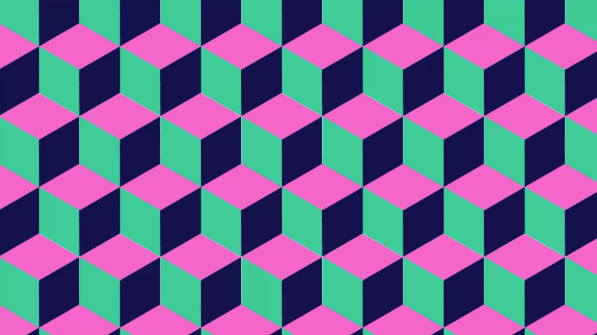
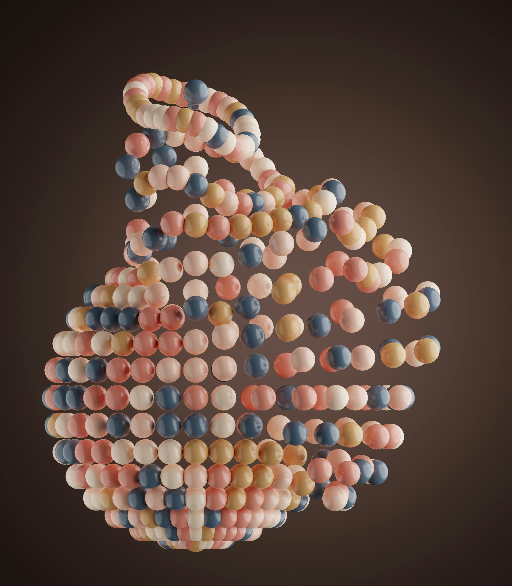
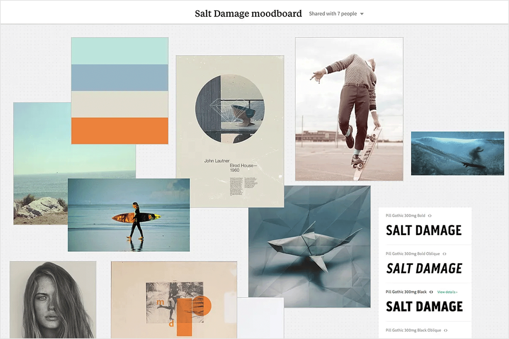
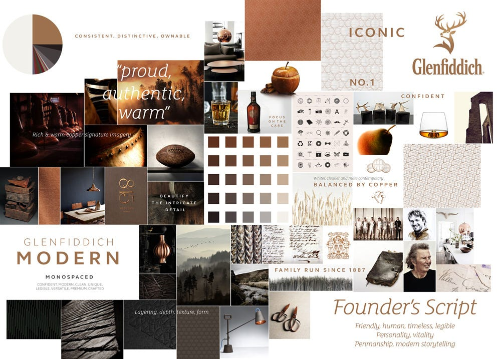
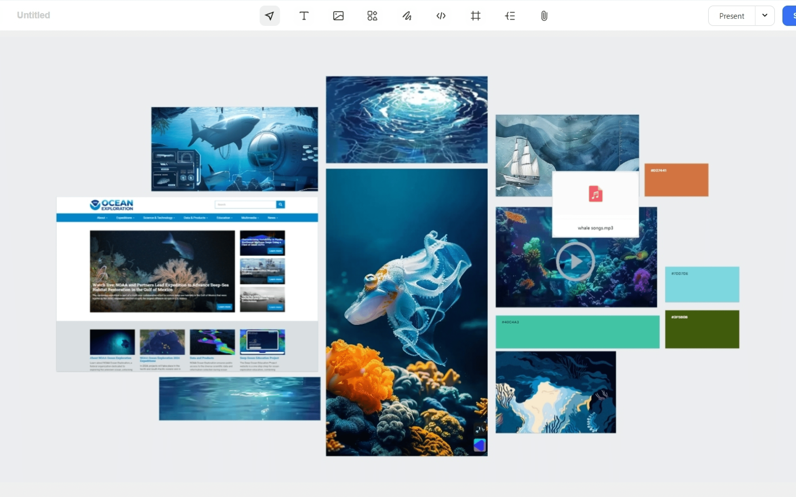
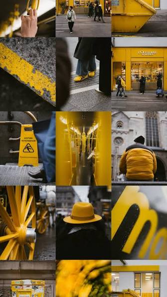
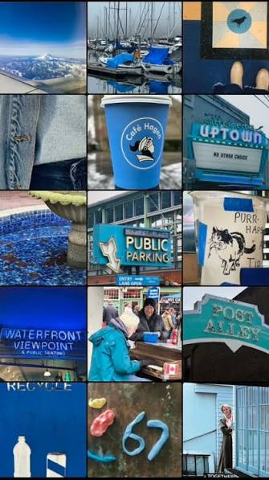
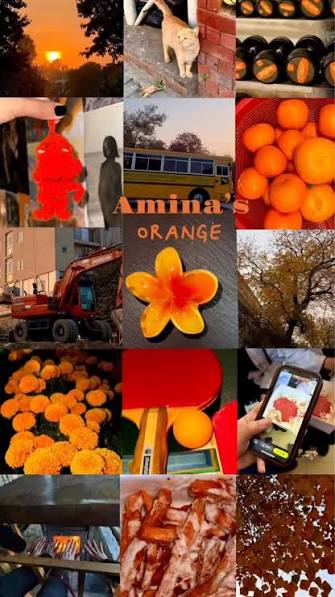

Design1 · P1 · GLR Media Creative
Les 2 — sfeer in beeld: het moodboard
Je kiest één kleur en gaat die buiten zoeken. Van losse foto's naar één onderbouwd sfeerbeeld.
Stelling
Voordat iemand jouw werk begrijpt, voelt hij al een sfeer.
Een moodboard is hoe je die sfeer ontwerpt.
Noem een merk, game of film waarbij je het gevoel meteen herkent — nog voordat je iets leest.
Afspraken
Vier afspraken zodat we gefocust en veilig kunnen werken.
Geen telefoons tijdens uitleg en opdrachten — behalve als je hem als camera gebruikt.
Alleen water in een afgesloten fles.
Laat even weten als je het lokaal verlaat.
Je blijft met je groepje in de omgeving van de school, zodat we je kunnen bereiken.

Programma
Eerst snappen wat een moodboard is, dan zelf beelden verzamelen en bouwen.
Waar gaan we vandaag naartoe?
Wat is een moodboard, waar is het goed voor en hoe ziet het eruit?
Foto's maken van jouw kleur: minstens 12, verdeeld over de 5 hoeken.
Foto's verzamelen en je moodboard maken in Figma.
Leerdoelen · periode 1
Deze doelen lopen door in alle lessen van periode 1.
Lesdoelen · kleurenleer
Deze les werken we aan vier doelen.
Terugblik · kleurenleer
Wat is het kleurenwiel — en hoe kun je het gebruiken?
Waarom is kleur belangrijk in design?
Buren naast elkaar — rustig en harmonieus.
Tegenover elkaar — veel contrast.
Drie kleuren, gelijk verdeeld — levendig.
Één tint in verschillende helderheden — heel rustig.
Uitleg · moodboard
Een moodboard is een visuele collage van afbeeldingen, kleuren, materialen, teksten en vormen die samen een bepaalde sfeer, stijl of idee uitdrukken.
Foto's, kleurvlakken, materialen, teksten, vormen en typografie — alles wat jouw sfeer draagt.
Je verzamelt en onderzoekt beeld vóórdat je gaat ontwerpen. Zo maak je gerichtere keuzes.
Uitleg · moodboard
Een moodboard helpt je op drie manieren.
Je maakt een idee, gevoel of sfeer zichtbaar met beelden, kleuren en vormen.
Je ontdekt welke stijl en sfeer bij je idee passen — daardoor maak je makkelijker keuzes.
Je laat snel zien welke uitstraling je voor ogen hebt, zonder alles uitgebreid uit te leggen.
Je onderzoekt je kleur (1), kiest een richting (2) en legt je sfeer uit aan je groepje én aan je docent (3).
Voorbeeld 1 · grafisch & web
Surfen, zout water en frisse blues met één warme oranjetint. Alles op dit bord — tot het lettertype aan toe — wijst dezelfde kant op.
Moodboard voor een branding- en websiteproject.
Welke sfeer voel jij?

Voorbeeld 2 · merk & campagne
Koper, bruin, leer en wol. Kleur, materiaal, fotografie én typografie vertellen hier samen één verhaal over ambacht.
Moodboard voor een merkidentiteit.
Welke woorden passen hierbij?

Voorbeeld 3 · in Figma
Beelden, kleurvlakken met hex-codes en zelfs een geluidsbestand: alles op één canvas.
Screenshot van een moodboard in Figma.
Hier werk jij straks ook in.

Opdracht · stap 1
Iedereen in je groepje kiest een andere kleur. Kies een kleur die je aanspreekt — die ga je straks buiten zoeken.
Tips · voordat je op pad gaat
Vijf tips die het verschil maken tussen losse kiekjes en bruikbaar materiaal.
Foto-eisen · diversiteit
Je vijf gekozen foto's komen uit vijf verschillende categorieën. Zo fotografeer je niet vijf keer hetzelfde.
gebouwen, gevels, deuren, kozijnen
neonborden, posters, stickers, verkeersborden
roest, verfbladders, steen en textiel — dichtbij
planten, bloemen, lucht, water
vervoer, fietsen, kleding, straatmeubilair
Maak eerst minstens 12 foto's en probeer alle vijf de hoeken te raken. Kies daarna je vijf beste foto's — één uit elke hoek — voor je moodboard.
Let op: vijf foto's van vijf verschillende auto's is nog steeds één hoek. Wissel onderwerp én categorie af.
Opdracht · naar buiten · 60 minuten
Je gaat met je groepje van BEROEPS1 op pad. Iedereen heeft zijn eigen kleur — binnen het groepje heeft niemand dezelfde.
Maak foto's van voorwerpen, plekken, details en situaties waarin jouw kleur duidelijk zichtbaar is.
Minstens 12 foto's, verdeeld over de 5 hoeken van de vorige dia. Daaruit kies je 5 foto's — één per hoek.
Je hebt 1 uur.
Voorbeeld · één kleur, veel beeld
Drie moodboards, elk rond één kleur: geel, blauw en oranje.



Opdracht · terug in de klas
Verzamel alle foto's en bouw je eigen sfeerbeeld in Figma.
Zet al je foto's bij elkaar en kijk wat je hebt. Heb je genoeg variatie in groot, klein, dichtbij en veraf?
Selecteer je vijf beste beelden: één uit elke hoek van de 5-hoeken regel. Welke versterken jouw kleur en sfeer?
Zet je beelden op één canvas. Groot en klein door elkaar geeft rust en ritme.
Voeg je kleur als vlak toe met de hex-code en zet er sfeerwoorden bij.
Je hebt je foto's nodig (minstens 12), het Figma-template uit de lesstof en de hex-code van jouw kleur.
Aan de slag · Figma
Vier stappen — het template staat in de lesstof.
Open het template uit de lesstof in Figma en maak een eigen frame (bijvoorbeeld 1920 × 1080).
Zet je gekozen beelden op het canvas en varieer in grootte: een paar grote beelden, meerdere kleine.
Maak rechthoeken in jouw kleur, vul de hex-code in bij Fill en zet de code erbij.
Zet er drie sfeerwoorden of een korte quote bij — daarmee leg je je keuze uit.
Reflectie
Dit zijn de vragen die je in je inleverwerk beantwoordt.
Inleveren
Zo weet je zeker dat je niets vergeet.
Exporteer je moodboard uit Figma en zet je naam in het bestand.
Lever het in bij de opdracht Kleurenleer les 2 in Teams.
Het template en de uitleg staan in de lesstof van kleurenleer.
Dan bekijken we elkaars moodboards en bespreken we de keuzes.
Tip: ook je reflectie-antwoorden van dia 20 horen bij je inleverwerk.
Afsluiting
Klaar?
Vragen? Loop langs of stuur een bericht in Teams.